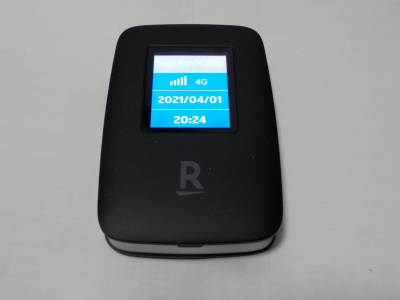

私のスマホと楽天モバイルは相性が悪いみたい。
2021/04/02
WiFi自体は普通に使えて何の問題もないですけど、
my楽天モバイルアプリがよく固まります。
使い始めで設定を色々試しているんですが、フリーズ回数多いです。
WiFiポケットの設定もスマホからブラウザを使って操作するとよく固まります。
パソコンをWIFI接続して操作するとスムーズに操作できるので、スマホに問題があるのかなー。
設定とか通信量なんかを見るのは今後パソコンを使おうと思います。
どうなっているんだろうと興味本位で色々見たんですが、設定は結局初期状態で変更する必要ないし、通信量も1年間は無料なので見る必要は特にないですけどね。
楽天モバイルに加入しました。
2021/04/01

1年間無料に引かれて楽天モバイルに入りました。
回線が1年無料で機械も無料って凄いです。加入に2年縛りみたいなものはないので、1年使ったらペネルティーなしでやめれます。（simの返却手数料はあるかも。）
なので気軽に入りました。
まだ私の家には楽天回線は来ていないのでau回線が月5ギガまで高速通信で、それを超えたら低速通信での使用になります。
近いうちにエリア内になるはずなのっで、高速で使い放題になると思います。
今持ってるスマホの契約を安いプランに変更して節約しようかな。